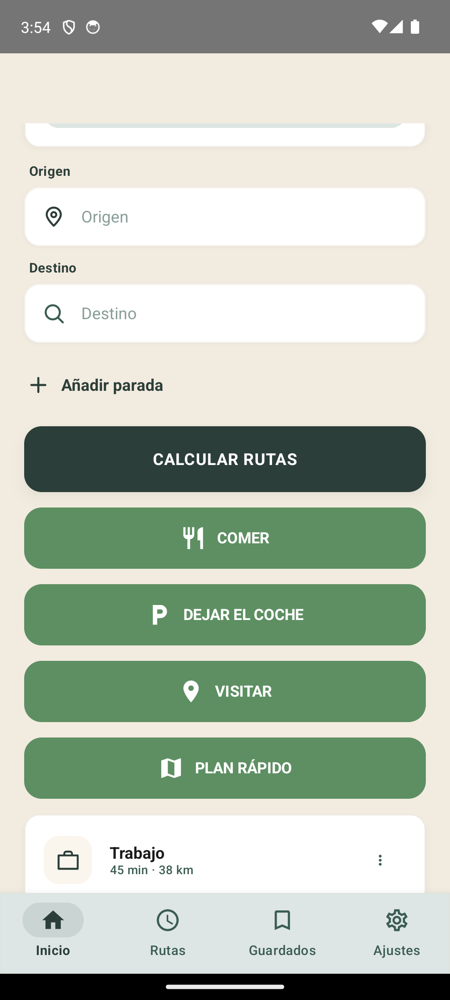
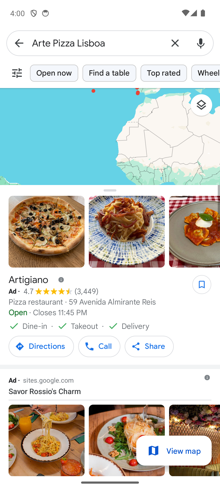
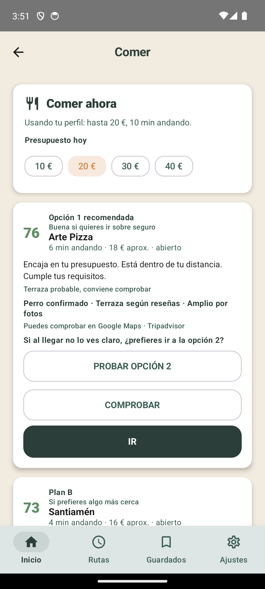
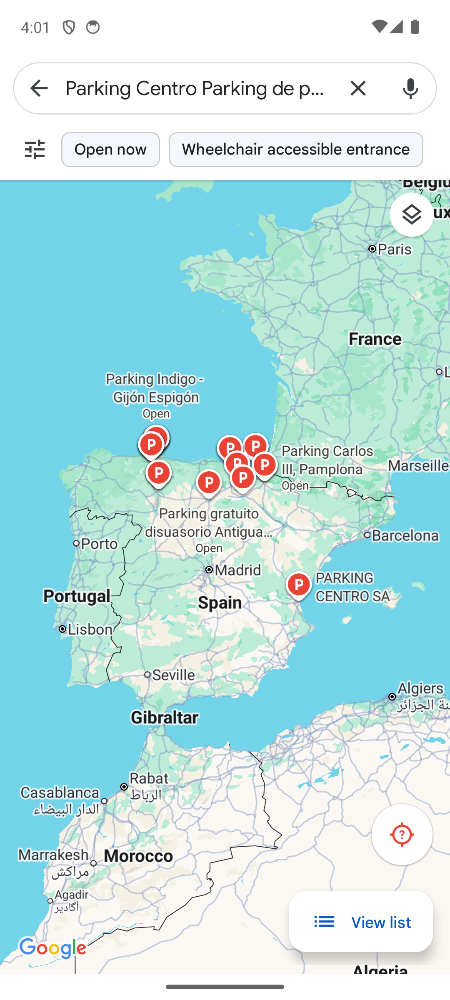
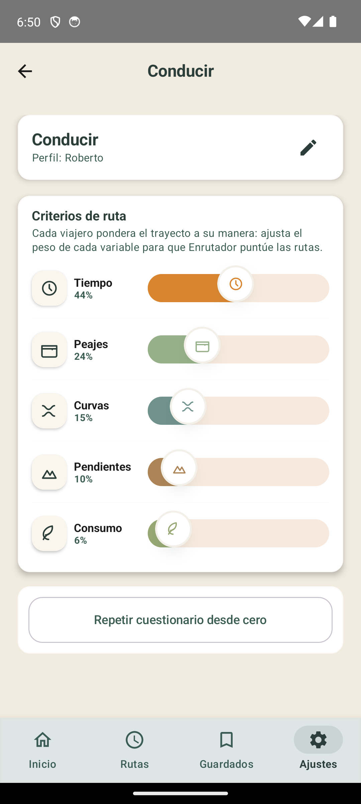
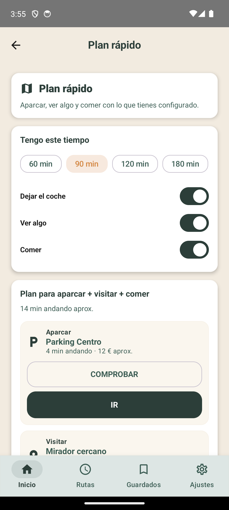

Moverse
Compara rutas por tiempo, peajes, curvas, pendientes y consumo.
Ruta, comida, parking y visitas
Decide qué hacer ahora, con tus preferencias delante y el mapa como comprobación final.

No es otro listado infinito
Enrutados separa cada decisión por vertical: conducir, comer, dejar el coche y visitar. Cada una tiene su perfil, sus reglas y su forma de explicar por qué una opción aparece antes que otra.
Compara rutas por tiempo, peajes, curvas, pendientes y consumo.
Filtra por precio, distancia, requisitos, ritmo y fuentes.
Distingue entre pasear un rato o dejar el coche muchas horas.
Ordena primero por cercanía y después por calidad contrastada.
Cómo funciona
La app no empieza enseñando veinte resultados. Empieza preguntando lo justo para saber qué decisión estás intentando tomar en ese momento.
Guarda cómo sueles decidir: cuánto te importa ahorrar, caminar, evitar peajes, comer rápido, aparcar cerca o visitar algo sin perder media tarde.
No todos los días son iguales. Puedes cambiar presupuesto, distancia aceptable, tiempo disponible o intención sin rehacer el perfil completo.
Si algo no cumple lo básico, se aparta. Después el scoring ordena solo opciones comparables, con avisos cuando una fuente no basta.
Enrutados decide. Google Maps u otra fuente externa sirven para confirmar, ver fotos, reseñas, ubicación real y finalmente llegar.

Comprobar e ir
Cada resultado puede revisarse en mapa y abrirse fuera de la app. La decisión es propia de Enrutados; la navegación queda donde el usuario ya confía.
Anuncio corto
Esta pieza no muestra el uso paso a paso. Funciona como presentación de marca: Enrutados como compañero de viaje para moverte, comer, aparcar y descubrir sin perderte entre opciones.

Comer ahora
Si hoy el presupuesto sube de 20 a 40 euros, la decisión cambia sin rehacer el perfil entero.

Dejar el coche
No es lo mismo aparcar para pasear que dejar el coche estacionado muchas horas o días. La app lo pregunta antes de ordenar opciones.
Scoring visible
Al mover una variable, las demás se reajustan proporcionalmente. El usuario no toca mandos aislados: cambia la relación entre criterios.


Plan rápido
Tengo X horas, quiero comer, aparcar y ver algo. Enrutados ya está preparado para unir verticales sin meter una encima de otra.
Base técnica
Cada vertical puede evolucionar sin romper las demás. La ruta no se mezcla con comida, parking no pisa visitar y el planner compone resultados ya explicados.
Intención, contexto, restricciones y recuperación.
El texto explica la decisión; no mezcla recuperación.
Preferencias, pesos, límites, overrides y feedback.
Componentes de puntuación, avisos y trazabilidad.
Enrutados
Moverse, comer, aparcar o parar. Todo empieza por elegir mejor.
Volver arriba